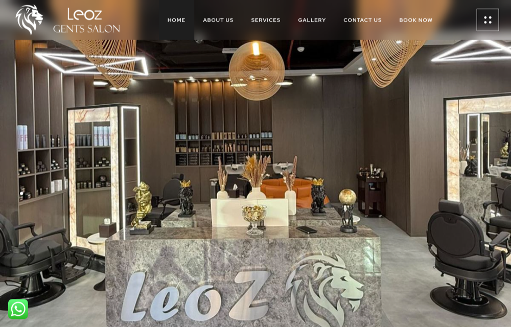
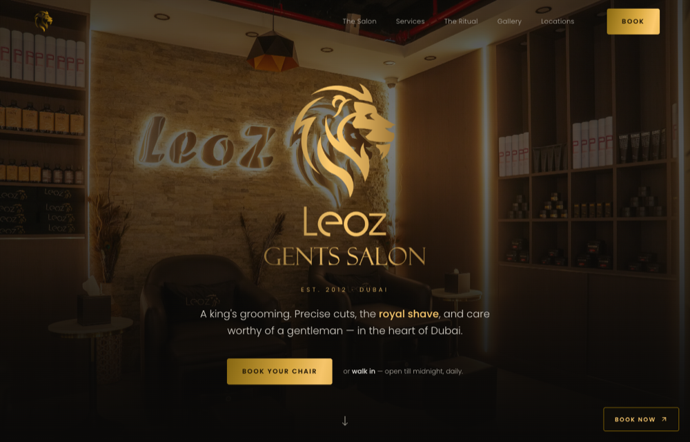
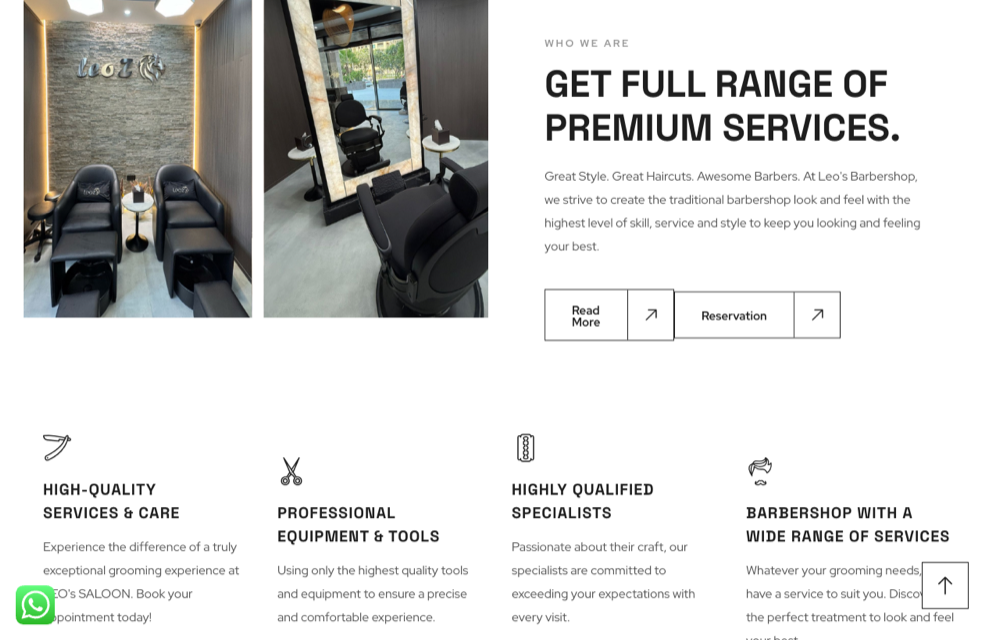
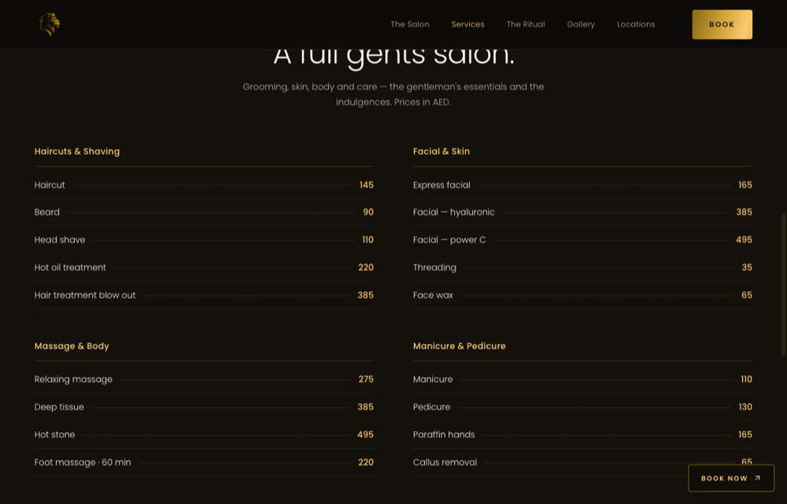

Owner Report
Website & Brand
Review
A business-level assessment of the current website, booking, brand and online visibility — and the case for the rebuild
| Part | Section |
|---|---|
| I | Executive summary & verdict |
| II | Business context & the current digital presence |
| III | User experience — the website journey |
| IV | Brand & identity |
| V | Visibility & performance — being found, and being fast |
| VI | Reputation & reach |
| VII | The plan & the bottom line |
Reviewed on 17 October 2026 against Nielsen usability heuristics, WCAG 2.2 AA accessibility, Google Core Web Vitals, and local-search best practice. Findings carry a business-impact tier: Critical · High · Medium · Low.
Leoz Gents Salon is an established, premium men's grooming business — two Dubai homes, open till midnight, and a decade of trade since 2012. Its current website does not say any of that. On one site, the business is named six different ways — "LEOZ BARBER", "Leo's Barbershop", "LEO'S SALOON", "LEO'S GENTS SALON", "LEOZ GENTS SALON" — and, left in the template copy, "Sublime Barbershop", the name of an entirely different business. Alongside it sits a leftover online-shop bar ("Let's Compare · Continue shopping · Hide similarities") on a salon that sells nothing online, a hero line that could belong to any barber ("Great Style. Great Haircuts. Awesome Barbers."), no prices, and placeholder artwork named Adsiz-tasarim.png — "untitled design".
The net effect: a luxury, decade-old salon is represented online as a generic, half-finished template. For a premium brand, the website is the first — and often only — impression, and this one quietly contradicts the business behind it.
This is not a page that needs tidying — the problems are structural: the brand, the content, the technology and the booking path all work against the business at once. The recommendation is a rebuild, not a patch. A premium replacement has already been designed and built (see Part VII); the return on it is high and fast.
The rebuild keeps every one of these and puts them where clients can see them.
| Area | Business impact | In one line |
|---|---|---|
| Brand & identity | High | Six names (one a competitor's); the real gold-lion brand is barely used. |
| Website experience | High | Generic template, no prices, booking leaves the site, visible clutter. |
| Visibility / SEO | High | Weak page title, no description, no H1, English-only in a bilingual city. |
| Performance | Medium | 62 scripts and a shop engine the site never uses — needless weight. |
| Reputation (shown) | High | A 5.0 / 211 rating that never appears on the website. |
Leoz's online presence today is four loosely connected parts:
leozbarber.com) — a WordPress site built with the WooCommerce shop plugin and the Elementor page builder. It is the shop window, and the focus of this review.The business itself is strong: two branches (Palm Jumeirah, Sky Gardens), open 10:00 – 24:00 daily, trading since 2012. The gap is entirely in how that business is presented online.
The public website and its public signals were reviewed on 17 October 2026 against four recognised frameworks: Nielsen's usability heuristics (experience), WCAG 2.2 AA (accessibility), Google Core Web Vitals (speed), and local-search best practice (findability). There is no back-office system or mobile app in scope — the business runs on booking and social — so this review is a focused presence-and-brand assessment, not a technical security audit.
Every finding carries a business-impact tier — Critical, High, Medium or Low — set by what it costs the business in lost first impressions, lost enquiries, or lost search visibility, not by how hard it is to fix.
Followed the way a prospective client would, from landing to booking.
The homepage opens on a stock-feeling line — "Great Style. Great Haircuts. Awesome Barbers." — that could belong to any barbershop in the world, repeated between the header and the hero. First impressions of a website form in roughly 50 milliseconds; for a premium, decade-old salon, that opening is the single most valuable moment on the site, and it currently signals "generic", not "luxury".


Services are listed by name only — "Royal shave", "Men's Haircut", "beard trim", "face care" — with no prices anywhere on the site. Every price question therefore becomes a manual message or call. Price clarity is one of the strongest reducers of booking friction; its absence quietly turns interested visitors into unanswered enquiries.
Fix: a full, categorised price menu in AED (haircuts & shaving, facial & skin, massage & body, mani/pedi) — already built into the new site.


"Book now" does work — it deep-links to Fresha — which is a real strength and must be kept. But it sends the visitor off the website entirely, and the WhatsApp option shows only as the text "WhatsApp us" with no working link. Each extra hop between "interested" and "booked" loses a share of clients.
Fix: on-site booking that pre-fills branch and service and sends straight to WhatsApp, with Fresha kept as the fallback — booking without leaving the page.
Because the site runs the WooCommerce shop plugin, a product-comparison bar is live on the page — "Let's Compare! · Continue shopping · Hide similarities · Highlight differences" — on a business that sells nothing online. Alongside it: a garbled sentence ("Shaving with a dangerous disposable razor"), a stray backslash in "Men\`s Haircut", and placeholder image names like Adsiz-tasarim.png. Each is small; together they read as unfinished, which is corrosive for a luxury brand.
The clearest brand problem is naming. Across a single website the business appears as "LEOZ BARBER", "Leo's Barbershop", "LEO'S SALOON", "LEO'S GENTS SALON" and "LEOZ GENTS SALON" — and the browser tab title is simply LEOZ BARBER.
More seriously, the template copy still contains "Sublime Barbershop" — the name of a different business, never removed. A client who notices it has every reason to doubt the care taken everywhere else.
Leoz has a strong, distinctive identity — the gold lion wordmark on near-black — but the website barely uses it. Brand consistency is precisely what a premium trade sells on; six names and a stray competitor read as "unfinished", which undercuts the price point.
Fix: one identity, everywhere — the real gold-on-black lion lockup used as artwork (not a stand-in web font), a single name ("Leoz Gents Salon"), and consistent wording throughout. This is the backbone of the new site.
LEOZ BARBER — no city, no services, not even "Gents Salon". The title is the headline Google shows; this one wins no searches for "men's salon Palm Jumeirah" or "barber Dubai".lang="en-US"). In Dubai, a sizeable share of clients search and read in Arabic; there is no Arabic version.Fix: a descriptive title and description, one clear H1, proper headings, and an Arabic (right-to-left) edition — all designed into the rebuild.
62 scripts on one page |
0 main headings (H1) |
5.0★ 211 reviews, unseen on-site |
For a brochure site, the homepage carries unusual weight — around 62 separate scripts, plus the WooCommerce shop engine and the Elementor page builder, none of which a booking-and-gallery site needs. Weight costs speed, and speed costs bookings: Google finds that 53% of mobile visits are abandoned when a page takes longer than three seconds to load. The modern targets are an LCP under 2.5 seconds, interaction under 200 ms, and a stable layout (CLS under 0.1).
Fix: a lean, purpose-built site with none of the shop/builder overhead — fast by construction.
Several images carry empty or missing alternative text, and the missing H1 leaves the page without a clear structure — both WCAG 2.2 AA items (1.1.1 Non-text Content, 1.3.1 Info & Relationships). Beyond compliance, the same fixes help search engines and anyone using a screen reader.
Leoz holds a 5.0 rating across 211 reviews on Fresha, with five-star Google reviews on top. For a grooming business, that is the strongest possible proof — the thing a new client most wants to see before booking.
And it appears nowhere on the website. The single most persuasive asset the business owns is invisible at exactly the moment a visitor is deciding whether to book.
Fix: the rating and real review quotes surfaced on the homepage and carried through the site — already built into the new design.
Instagram (@leoz_saloon) and Snapchat are active, but the website treats them as footer links rather than a reason to follow. Woven in — recent work in the gallery, the social accounts surfaced, reviews on the page — the site becomes a hub that feeds booking and following, not a dead end.
| When | What it moves |
|---|---|
| This week | Settle on one name and identity (Leoz Gents Salon, the gold lion); add the price menu; surface the 5.0 / 211 reviews; remove the leftover shop bar, the "Sublime Barbershop" text and placeholder copy. |
| The coming weeks | Launch the new premium site (Home · Services · The Salon) — one consistent brand, full AED menu, on-site booking (branch + service → WhatsApp, Fresha fallback), an immersive gallery from the salon's own shoots, and reviews on the page. Built lean and fast, with the page title, description and headings done right. |
| This quarter | Add the Arabic (RTL) edition, connect Google Business + analytics so visits and bookings are measurable, and set a light content/social cadence that feeds the gallery and reviews. |
Leoz Gents Salon has what most businesses spend years trying to earn: a decade of trade, two established homes, an active following, and a near-perfect reputation across hundreds of reviews. What it does not have is a website that reflects any of it. Today the brand is named six different ways on one page — one of them a competitor's — behind a generic template, cluttered with the remnants of a shop it never ran, with no prices, no Arabic, and its best asset, the 5.0 rating, hidden from view.
None of this is a tidy-up job; the brand, the content, the technology and the booking path each pull against the business. The highest-return move is the one already prepared: a single premium identity, prices and booking in place, the salon's own rooms and reviews on show, and a fast, modern build underneath. The business is ready; the website simply needs to catch up to it.
Prepared for Leoz Gents Salon by Propagenda · October 2026 · Confidential. Findings reviewed from the live website on 17 October 2026; benchmarks cited from Google, Nielsen Norman Group and the W3C WCAG 2.2 standard.